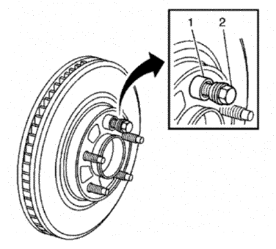

Medición del alabeo montado del rotor de freno
Herramientas especiales
| • | CH-41013 Juego de repaso del rotor |
| • | CH-42450-A Juego de repaso del cubo de rueda |
| • | Indicador de alabeo de cubo y rueda CH-45101 |
| • | CH-45101-100 Arandelas cónicas de rotor de freno |
Si desea informarse sobre herramientas regionales equivalentes, consultar Herramientas especiales .
Advertencia: Consulte Advertencia relacionada con el polvo procedente de los frenos en la sección Prólogo.
Nota:
| • | El alabeo montado del rotor de freno (LRO) que exceda la especificación máxima permitida puede provocar un desarrollo de la variación del grosor en el rotor del freno, normalmente entre 4.800-11.300 km (3.000-7.000 mi). |
| • | La variación del grosor del rotor del freno SE DEBE comprobar ANTES de comprobar el alabeo montado (LRO). La variación de grosor que exceda el nivel máximo aceptable puede provocar pulsaciones en el freno. Consultar Medición de la variación de grosor del rotor de freno . |
- Marque la posición del rotor de freno a los pernos de rueda si no se ha hecho ya.
Nota: Siempre que el rotor de freno se haya separado de la brida de cubo/eje, se deberá limpiar cualquier óxido o contaminantes de la brida de cubo/eje y las superficies de conexión del rotor de freno. Si no se hace, se podrá producir un alabeo montado (LRO) excesivo del rotor de freno que podría provocar pulsaciones en el freno.
- Compruebe la superficie de conexión de la brida de cubo/eje y el rotor de freno para asegurarse de que no quedan partículas extrañas, corrosión, óxido o suciedad. Si la brida de cubo/eje de rueda o si las superficies de conexión del rotor de freno muestran este estado, realice los siguientes pasos:
| 2.2. | Utilizando el kit para el repasado del cubo de rueda, CH-42450-A, |
| 2.3. | Utilizando el kit para el repasado del rotor, CH-41013-A, limpie a fondo la superficie de contacto del rotor de freno, para eliminar todo el óxido o corrosión que haya en la misma. |
| 2.4. | Limpie las superficies de fricción del rotor de freno con alcohol desnaturalizado o un limpiador de frenos equivalente autorizado. |
- Monte el rotor en la brida del cubo/eje usando la marca hecha antes del desmontaje.

- Sujete firmemente el rotor en su sitio contra la brida del cubo/eje y monte una de las arandelas cónicas del rotor de freno CH-45101-100 (1) y una tuerca del saliente de encastre (2) en el perno de la rueda situado en la posición más elevada.
- Continúe sujetando la fijación del rotor y apriete firmemente a mano la tuerca de saliente.

- Monte el resto de arandelas cónicas del rotor de freno CH-45101-100 y las tuercas del saliente de encastre en los pernos de la rueda y apriete las tuercas firmemente con la mano, siguiendo un patrón en forma de estrella.
- Apriete las tuercas del saliente de encastre hasta los valores especificados siguiendo un patrón en forma de estrella. Consultar Desmontaje y montaje de la rueda y el neumático .
- Si el rotor de freno se ha REPASADO o SUSTITUIDO por un rotor nuevo, vaya al paso 14.
- Si el rotor del freno cumple los siguientes criterios, vaya al paso 10.
| • | El rotor está dentro de las especificaciones y se va a VOLVER A USAR. |
| • | El rotor NO se ha repasado. |
| • | El rotor NO muestra una variación de grosor que exceda el nivel máximo permitido. |

- Monte un indicador de cuadrante, el indicador de desgaste de cubo y rueda CH-45101, o similar, en la mangueta, y coloque el palpador del indicador de tal manera que toque la superficie de fricción del rotor del freno en ángulo de 90 grados, a unos 13 mm (0,5 pulg.) del borde exterior del rotor.
- Medición y registro del LRO montado del rotor de freno.
| 11.1. | Gire el rotor hasta que se muestre la lectura más baja en el dispositivo de medición y luego ponga el dispositivo a cero. |
| 11.2. | Gire el rotor hasta que se muestre la lectura más alta en el dispositivo. |
| 11.3. | Marque la ubicación del punto alto respecto al perno o pernos de rueda más cercano(s). |
| 11.4. | Mida y registre la cantidad de LRO. |
- Compare el LRO montado del rotor de freno con la siguiente especificación:
Especificaciones
| • | Alabeo montado máximo permitido del rotor de freno delantero: 0,05 mm (0,002 pulg.) |
| • | Alabeo montado máximo permitido del rotor de freno trasero: 0,05 mm (0,002 pulg.) |
- Si el LRO montado del rotor de freno está dentro de las especificaciones, vaya al paso 18.
Si el LRO montado del rotor de freno excede la especificación, repase el rotor para garantizar un paralelismo real. Consultar Repaso del rotor de freno . Después de repasar el rotor, vaya al paso 14.
- Monte un indicador de cuadrante, el indicador de desgaste de cubo y rueda CH-45101, o similar, en la mangueta, y coloque el palpador del indicador de tal manera que toque la superficie de fricción del rotor del freno en ángulo de 90 grados, a unos 13 mm (0,5 pulg.) del borde exterior del rotor.
- Medición y registro del LRO montado del rotor de freno.
| 15.1. | Gire el rotor hasta que se muestre la lectura más baja en el dispositivo de medición y luego ponga el dispositivo a cero. |
| 15.2. | Gire el rotor hasta que se muestre la lectura más alta en el dispositivo. |
| 15.3. | Marque la ubicación del punto alto respecto al perno o pernos de rueda más cercano(s). |
| 15.4. | Mida y registre la cantidad de LRO. |
- Compare el LRO montado del rotor de freno con la siguiente especificación:
Especificaciones
| • | Alabeo montado máximo permitido del rotor de freno delantero: 0,05 mm (0,002 pulg.) |
| • | Alabeo montado máximo permitido del rotor de freno trasero: 0,05 mm (0,002 pulg.) |
- Si la medición del LRO montado del rotor de freno excede la especificación, haga que el LRO se encuentre dentro de las especificaciones. Consultar Corrección del alabeo montado del rotor de freno .
- Si el valor de alabeo (LRO) del rotor de freno montado se encuentra dentro de especificaciones, monte la pinza del freno y pise el pedal de freno varias veces para para fijar el rotor en su posición correcta, antes de desmontar las arandelas cónicas del rotor de freno CH-45101-100 y las tuercas del saliente de encastre.
| © Copyright Chevrolet Europe. All rights reserved |